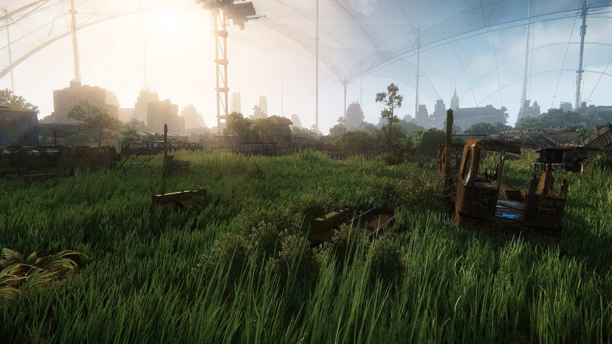

Overview
Merged Mesh (MM) vegetation allows us to combine more subsystems within CRYENGINE (vegetation, physics, explosions, localized and global wind), to work seamlessly together to achieve a much more realistic and result in the vegetation system. Due the batching of the MM technology, it allows us to create and use individual blades of grass, rather than patches. This allows us to add more variation in a scene, through more instances.
If you want to find information about using the Vegetation Editor in CRYENGINE, please go HERE.

Pic 1: Scene from Crysis 3 merged mesh grass
Due to the way the technology works (large scale batching of the vegetation items), we have to enforce a very simplistic geometric setup for the asset. Using the MM technology on a grass patch will work but at a great expense on performance. So it's recommended to only use the MM tech on the assets with the specific setup.
General Guidelines
- Keep your geometry as simple as possible. The technology takes advantage of the branch set up where you would set up a chain of 3 joints, Branch1_1, 1_2, and 1_3.
- Assign multiple (plants) into a single texture. Since the setup is very simple this allows you arrange multiple plants onto the same texture sheet. This offers the advantage of the sharing the same textures, but having maximum variation. For example, in the above picture from Crysis 3, we had one big texture 4096x2048 that contained all the grass variations.

Pic 2: Example texture for a grass group used in the above scene in Crysis 3
Breeze Generation
Merged Mesh Technology has to be used with the Breeze generation technology to get the maximum benefit in performance and the visual quality of the final setup. The Breeze generation simulates the randomness of wind gusts blowing across the landscape. This ties in with the simplified assets setup to create very believable natural motion in the grass.
Debug Information
To visualize how the system is working in the background, there is a CVar dedicated to the merged mesh vegetation technology.
e_MergedMeshesDebug
| CVar | Value | Description |
|---|---|---|
| e_MergedMeshesDebug | 0 | Standard mode, no debugging information. |
| e_MergedMeshesDebug | 1 | Additional debug info added to r_displayinfo (top right of the screen). |
| e_MergedMeshesDebug | 2 | Shows AABB + debug info (position, state, size, visibility). |
| e_MergedMeshesDebug | 64 | Shows the calculated wind. |
| e_MergedMeshesDebug | 256 | Draws colliders of objects influencing the merged meshes. |
| e_MergedMeshesDebug | 544 | Draws spines. |
| e_MergedMeshesDebug | 1056 | Draws simulated spines. |
| e_MergedMeshesDebug | 2080 | Draws spines with LOD info (red/blue). |
Tutorials
Depending on the DCC tool used - the links below show you how to setup vegetation assets for Merged Meshes.